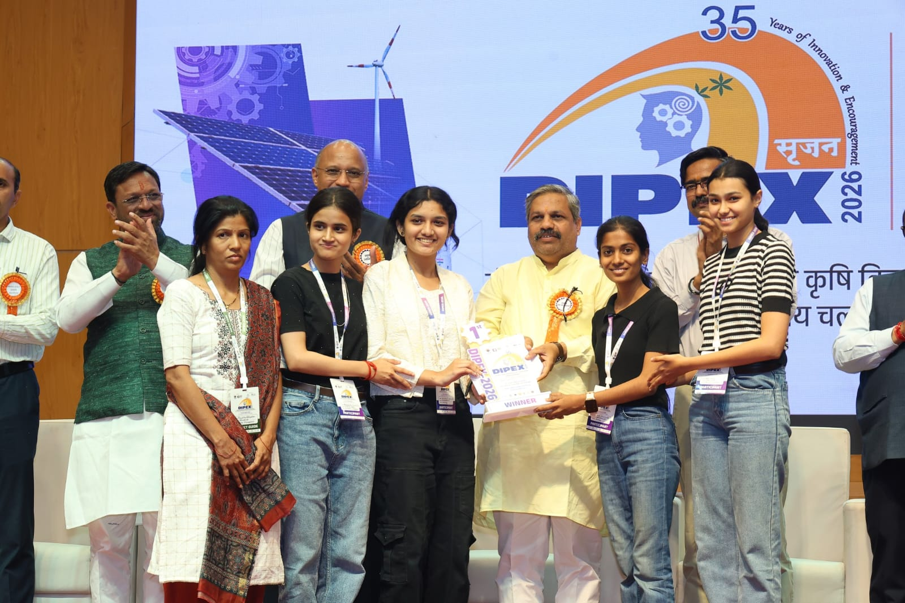
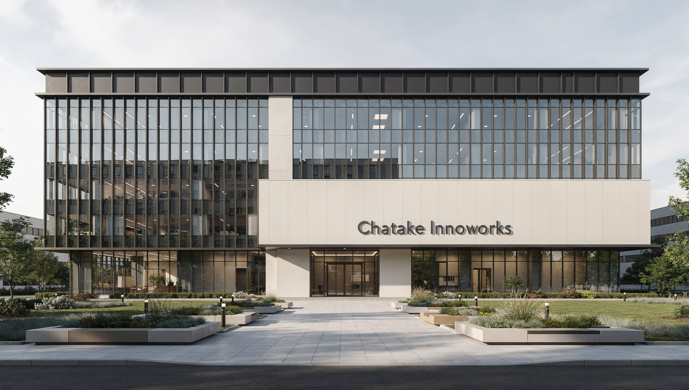

Biogas Plants Need Process Intelligence
Small and industrial anaerobic digestion systems are sensitive to temperature, pH, loading rate, retention time, volatile solids, and instability markers such as VFA/ALK ratio.
Chatake Innoworks GreenWorks / BITS Pilani Dissertation Build
GFIS is the unified command point for the original public website, the Level 2 research workbench, physics-guided methane models, industrial simulation, dissertation documentation, and deployment evidence.

GFIS acknowledges Prof. Mohana Murali G, BITS Pilani WILP evaluator, for suggesting and strengthening the Physics-Informed Machine Learning framing used in this dissertation prototype.
Project Scope
Small and industrial anaerobic digestion systems are sensitive to temperature, pH, loading rate, retention time, volatile solids, and instability markers such as VFA/ALK ratio.
GFIS focuses on methane yield prediction, stability warnings, what-if simulation, and physics-guided checks so recommendations remain practical and defensible.
The system supports agricultural waste valorization, CBG planning, decentralized energy, carbon reduction evidence, and better economics for rural energy systems.

CI Vision
Chatake Innoworks treats GFIS as more than a demonstration page. It is a GreenWorks research platform for clean energy, agricultural residue utilization, biogas intelligence, student-led engineering, and deployable AI systems. The company photo belongs here because GFIS is connected to the organization, its R&D discipline, and its responsibility to convert ideas into working infrastructure.
"Innovation is not the slide or the slogan; it is the system that still works after the demo is over."
Chatake Innoworks Work
GFIS began as a practical GreenWorks initiative around biogas optimization and field-level decision support. The DIPEX milestone established the project as a demonstrable sustainability technology direction. The current Level 2 work advances it into a research-grade digital twin with machine learning, physics constraints, simulation, explainability, deployment planning, and dissertation evidence.
Working Philosophy
"What can be measured can be improved; what can be explained can be trusted; what can be deployed can create impact."
GFIS is built around this line: model the process, explain the decision, and keep the system close enough to the field that it remains useful.
GFIS Levels
Level 1
The preserved public GFIS website with the original positioning, features, demos, and impact story.
Open Level 1Level 2
The new dissertation layer: engines, simulations, documents, reports, diary, notes, live readings, and deployment pipeline.
Open Level 2Next
Future plant telemetry, field deployment, operator workflow, ROS2/Gazebo simulation, and industrial integration.
Discuss CollaborationPipeline